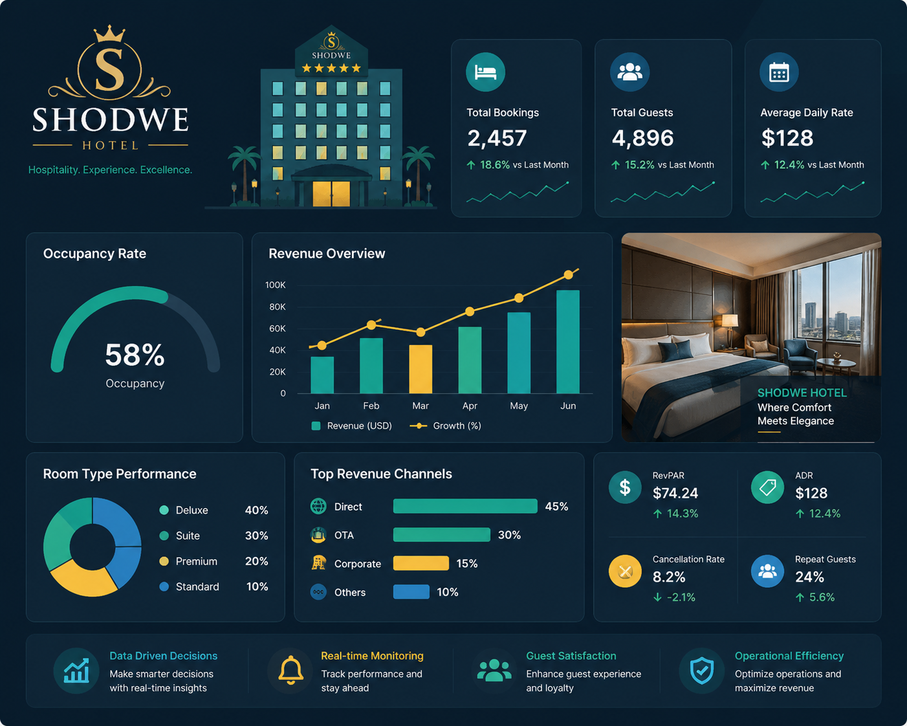

ShodweStay Hospitality Analytics — from raw bookings to a defensible BI story.
A hands-on capstone built around a real hotel-booking dataset for Shodwe Group — 134,590 individual bookings and 9,200 pre-aggregated occupancy records across 25 hotels in 4 cities, over 92 days (May–July). You'll take that data through Excel, SQL, Tableau and Power BI, implementing 25 KPIs and DAX measures — from headline Revenue and Occupancy % down to week-over-week trend indicators — into one Booking & Occupancy dashboard, then defend the numbers in a QA review.


Problem Statement
Shodwe Group, a big-sized hospitality chain with properties across India, was struggling with fragmented and delayed reporting — "We were making decisions reactively, not proactively," — Hotel Revenue Manager, Shodwe Group.
One booking dataset, four tools, one story
Each tool plays a distinct role in the pipeline — interviewers frequently probe why a given stage used the tool it did.
How the same dataset moves through all four tools
Excel: work directly on the raw dim_hotels / dim_rooms / dim_date / fact_bookings / fact_aggregated_bookings export — clean it and build the first-pass dashboard straight from the spreadsheet.
Tableau & Power BI: don't connect to the Excel file. First load the dataset into SQL, then connect Tableau and Power BI to SQL as the data source — specifically to vw_hotel_booking_analysis, the pre-joined mart view — and build the dashboard from there.
QA: run SQL queries directly against the backend database, then match every count, sum and percentage against what's shown on the Booking & Occupancy dashboard — that reconciliation is what a QA review actually checks.
Hospitality data → ETL → warehouse → Tableau / Power BI
The full path data actually travels: booking and occupancy exports get loaded and cleaned, transformed into the analytics warehouse, and both BI tools connect only to the warehouse — never to each other, never to the raw export directly.
Live-flowing reference, not a literal animation of your data — but this is the real path: nothing reaches Tableau or Power BI except through the warehouse, and nothing reaches the warehouse except through ETL.
What is hospitality analytics, and why build BI on top of it?
What it means
Where it's used
What kind of data a hotel booking system actually generates
This capstone's 5 tables are a simplified, analytics-ready shape of exactly this kind of real-world hospitality data.
Install the tools, then load the data
Before you touch a dashboard: get Tableau and Power BI installed, and get the dataset loaded into MySQL so both tools have a real source to connect to.

Five stages, one dataset
The build order matters — each stage is graded on what the previous one produced.
Project schedule
Participation guidelines for this capstone
Same rules that apply to your project group — read them once so nothing here surprises you mid-course.
What "good participation" looks like week to week
Why this tab exists in an interview-prep hub
"How do you handle a teammate who isn't contributing?" and "tell me about a conflict on a project team" are standard behavioral questions — this policy is the real situation you can draw the honest answer from.
All 26 KPIs & DAX measures — what each one means, and the logic behind it
Filter by group. Each card gives the plain-English description first, then the exact DAX formula from the project's metrics register — know both, because interviewers ask for the "why" as often as the formula.
Two fact tables at two different grains
fact_bookings (one row per booking) and fact_aggregated_bookings (one row per property × date × room-type) join back together on a 3-column composite key — that asymmetry is worth naming precisely in an interview.
Global filters (apply across the dashboard's visuals)
Load order (Power BI / Tableau)
Expected nulls & quirks — not errors
Calculated fields to add in the BI tool
⚠️ Gotchas & Interview Traps
The specific traps interviewers ask about most in this dataset — know these cold.
Every join you need for Power BI / Tableau, in one place
The exact table-to-table joins to build in the model view — copy this straight into your relationship setup.
One dashboard, one audience
Who reads this, and what decision does it drive — a favorite interview probe.
Every column, every table — straight from the source files
Pulled directly from the workbook's own sheets and the provided metadata file. This is the reference you should have open the first time you touch the real files — know every column's type and meaning before you write a single query, including the 10 columns fact_bookings carries that the metadata file never documented.
What the KPI numbers look like on screen
Computed directly from the real ~134,590-row dataset — these are the actual numbers your SQL and BI builds should reproduce. Worth noting going in: Occupancy % (57.9%) and Realisation % (70.2%) look like they should be close but measure entirely different things — one is capacity utilization, the other is booking-to-stay conversion — and that's exactly the kind of distinction a good dashboard makes unmistakable.
The validation queries you'll be asked to reproduce
Run these against your own SQL build and reconcile the output with your Tableau/Power BI numbers before the review meeting — QA rounds start right here.
Questions this project actually gets asked
Grouped by round, including the "explain this project / what did you actually do" style questions that open almost every interview. Tap a question to expand the answer approach. Mark ones you've nailed to track progress (saved on this device).
🎴 Flashcard Quiz Mode
Flip through questions one at a time, hide the answer, self-grade "Got it" or "Review again" — a faster way to drill than reading top to bottom.
Hospitality & BI terms worth knowing cold
The vocabulary interviewers assume you already have. If you can define every term on this page in one sentence, you're ahead of most candidates at your level.
What actually matters for a data analytics interview
Distilled from recruiter-side patterns across Data Analyst / BA / BI interviews — the difference between reciting definitions and sounding like someone who has shipped a dashboard.
The one habit that separates candidates
Ready for the real thing?
Print a one-page cheat sheet of every KPI and interview question you've starred (★) across this site — nothing unstarred, nothing you haven't chosen.